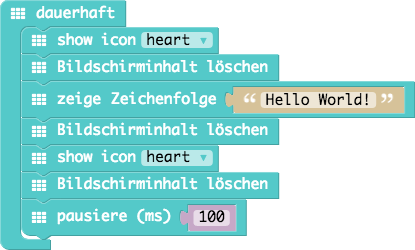
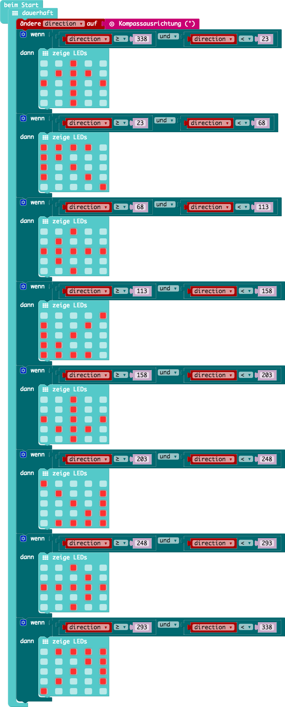
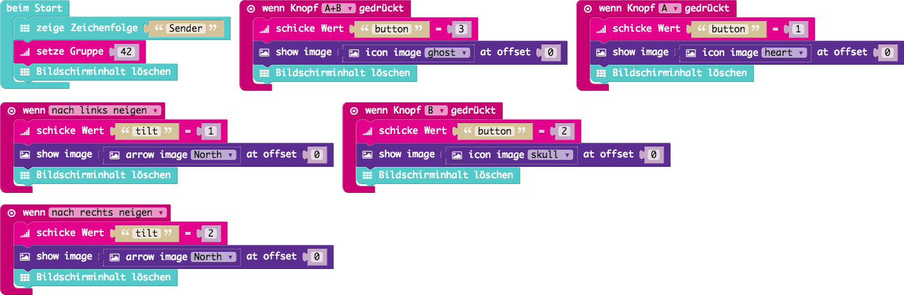

Dieser Workshop ist für eine Dauer von etwa 90 Minuten zusammengestellt.
Für den Workshop kann man entweder einen Online Editor verwenden: https://makecode.calliope.cc/
Alternativ kann man auch lokal einen Editor starten: https://github.com/calliope-mini/pxt-calliope-static
Für den Einsatz des Editors sollte man mindestens einen Raspberry Pi 3 einsetzen, da der Raspberry Pi 2 sehr an seine Grenzen stößt.
Schreibt eure Namen mit dem Calliope. Verwende dafür die LED Matrix!
| Code | HEX |
|---|---|
| 01_hello-world/01_hello-world.js | 01_hello-world/01_hello-world.hex |

Es ist auf dem Calliope ein kleiner Lautsprecher verbaut. Baue eine kleine Melodie für den Calliope.
| Code | HEX |
|---|---|
| 02_music/02_music.js | 02_music/02_music.hex |

In dieser Aufgabe lernst du die Sternspitzen (Pins) des Calliope kennen.
Durch Berührung kannst du den Calliope steuern. Ändere die Farbe der RGB-LED durch deine Berührung
Hinweis: Es muss immer auch gleichzeitig "GND" bzw. die mit "-" gekennzeichnete Sternspitze berührt werden!
| Code | HEX |
|---|---|
| 03_touch/03_touch.js | 03_touch/03_touch.hex |

Nutze die Möglichkeiten aus den beiden Aufgaben zuvor und baue ein Klavier, sodass beim Drücken einer Taste ein Ton erklinkt.
| Code | HEX |
|---|---|
| 04_piano/04_piano.js | 04_piano/04_piano.hex |

Ganz schön laut hier drin? Lass uns mit den Calliope die Lautstärke messen!
In dieser Aufgabe lernst du das erste Mal Platzhalter und den Mikrofon-Eingang kennen.
| Code | HEX |
|---|---|
| 05_noise/05_noise.js | 05_noise/05_noise.hex |

Immer wenn es uns zu laut wird wollen wir das mit dem Calliope anzeigen können.
In diesen Beispiel verwenden wir das erste Mal eine Bedingung (Wenn...Dann...Ansonsten...)
| Code | HEX |
|---|---|
| 06_noise-light/06_noise-light.js | 06_noise-light/06_noise-light.hex |

Der Calliope kann dir die Rechtung weisen. Dafür hat er einen Kompass eingebaut. Was ist ein Kompass? Und wie funktioniert er? Was sind 0 bis 360°?
Achtung! Der Kompass muss zunächst kalibiert werden damit er richtig funktionieren kann.
| Code | HEX |
|---|---|
| 07_compass/07_compass.js | 07_compass/07_compass.hex |

Der Calliope kann mit anderen Calliopes sprechen. Sende einer anderen Gruppe eine geheime Nachricht.
| Code | HEX |
|---|---|
| 08_messages/sender.js | 08_messages/sender.hex |
| 08_messages/receiver.js | 08_messages/receiver.hex |
